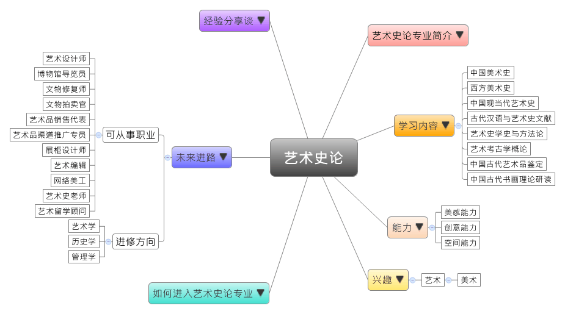

- 专业大观园
-

- 专业介绍
-
什么是艺术史论？
艺术史论主要是研究中外艺术史与各种艺术理论，通过认识与熟悉各类型的艺术知识来培养艺术能力。在职场上，艺术史论是个冷门专业，就业面向也较窄。不过对于一些高专业度、具相关工作经验，以及外语能力强的人来说，还是很有发展的空间，一般可以从事艺术教育与研究、文物拍卖与管理、新闻出版等工作；在生活中，通过欣赏音乐会、画展、雕刻作品等活动，都可以丰富我们的生活经验。
艺术史论专业除了培养学生具备扎实的艺术、美学、设计领域的基础理论与知识，学生也须对于各个艺术门类有基本的了解，才能具备基本的艺术鉴赏与批评的能力。

造型基础课程中进行静物写生 欣赏现代艺术展览
- 学习内容
-
艺术史论专业学生主要学习中外艺术史与美学等艺术相关理论与知识，此外，学生亦须接受艺术设计、艺术鉴定、美术考古、文物保存与维护等的专业训练。
本专业学习方向通常分为三类：艺术学理论类、中国艺术史类和外国艺术史类。艺术史论专业主干课程有：中国美术史、西方美术史、中国现当代艺术史、古代汉语与艺术史文献、艺术史学史与方法论、艺术考古学概论、中国古代艺术品鉴定、中国古代书画理论研读、艺术传播学……等。此外，学生须到各文化单位进行实践性教学实习课程。
本专业可以习得的知识与获得之能力、技能列点：第一，掌握艺术学学科的基本理论与知识，以及具备艺术学综合分析的方法和能力；第二，具备基础的艺术鉴赏和批判性思维能力，以及较强的外语沟通能力；第三，熟悉我国文化艺术和产业的政策，并随时关注艺术学科的应用前景与发展需求。
- 能力
-
艺术史论专业学生，需具备以下能力：
相关性向能力 说明 美感能力  具有感受事物美感的直觉力
具有感受事物美感的直觉力
能够对艺术品进行价值评判创意能力 具备艺术创作的直觉与分析思维能力
能够在艺术知识基础上，进行不同层面的灵活创作力空间能力 具有二维与三维的空间转换能力
能对于所感知到的事物进行加工改造的能力
准确地感知视觉世界的能力，并重造视觉经验的能力
- 兴趣
-
若你对下列活动或事物有高度兴趣，可考虑进入艺术史论专业学习：
艺术 美术 喜欢看图、画图，且富于想象
具备丰富而细腻的情绪感受力
对于文艺作品与相关活动感到兴趣
- 如何进入此专业
-
下面列举开设艺术史论专业的211工程重点大学院校：
- 未来进路
-
可从事职业
艺术史论专业的就业方向主要是教育、培训等领域，毕业生在大城市有比较多发展的机会。不过，由于社会进步，此专业在艺术设计方面的人才需求量还处于供不应求的状态。学生毕业后可至各类型艺术品的拍卖行、画廊、艺术设计公司工作；或是进入出版单位从事编辑工作；最后则是在文博系统、各高等院校或科研部门从事艺术学相关的教学、研究或文物鉴定等工作。在工作职场上皆能发挥艺术批判与鉴定、文物保存与维护等专长：
行业 职业 文化艺术服务 艺术设计师、博物馆导览员、艺术顾问、视觉艺术总监、公共艺术软装设计师、档案管理人员、文物修复师 文化贸易代理与拍卖服务 新媒体艺术运营专员、文物拍卖官、艺术品经纪人、艺术品销售代表、艺术品渠道推广专员 会展服务 展柜设计师、画廊场布员、专题展览设计员 新闻出版发行服务 艺术编辑、网络美工、环境艺术施工图绘图员 教育 艺术史老师、艺术设计老师、艺术鉴赏老师、艺术培训师、艺术留学顾问 进修方向以下列举艺术史论专业毕业生可以继续修读之学科门类、一级学科与硕士点：
学科门类 一级学科 硕士点 哲学 艺术学理论艺术学理论、文化产业、传媒艺术学、艺术与科学 音乐与舞蹈学声乐表演艺术及其教育、作曲与作曲技术理论、钢琴表演艺术及其教育 戏剧与影视学数字媒体艺术、动画学、游戏、电影学、广播电视艺术学 美术学美术理论、设计艺术、数字艺术、绘画、公共艺术、雕塑艺术学 设计学设计艺术学、视觉传达设计研究、工业设计研究、公共空间艺术研究、环境艺术设计研究、数字媒体与交互设计研究、信息艺术设计、动画创作与理论研究、插图设计与版画研究、互动艺术与技术、数字媒体技术 艺术（专业硕士）艺术设计、美术、音乐、广播电视、电影、戏剧、舞蹈、戏曲 历史学 考古学考古学及博物馆学、专门史、文化遗产管理研究 文物与博物馆（专业硕士）文物与博物馆 管理学 公共管理文化资源与文化产业
- 经验分享谈
-
把中国当代艺术家推到前台——艺术史家巫鸿
巫鸿是哈佛大学美术史和人类学双博士，更是中国赴美学习艺术史第一人。在哈佛期间，他曾策划与组织过许多大型展览，包括“断裂的流动—叶永青个展”（2011）、“2010·曾梵志”（2010）、“物尽其用：赵湘源和宋冬”（2005）、“2004烟草计划—徐冰个展”等、首届“广州三年展”等。
巫鸿从小生长在一个知识分子的家庭里，家庭宽松的读书环境让他对知识产生兴趣。他一路上遇到多位名师益友，为他的艺术生命增添了许多亮色。之所以选择美术史，巫鸿笑着说“非常偶然”，“我一直喜欢画画，想当个艺术家。其实，我在‘文革’有一段很不平凡的经历，我在1969年被打成了学生中的‘反革命分子’，被送到河北宣化接受工农兵的再教育。1972年之后，我和几个同学糊里糊涂被分到故宫这非常好的地方。我在故宫的第一年的任务是‘站殿’，就是看管展览厅、清理展览的柜子、扫地擦地等工作。我先后进入书画组、金石组工作，在金石组我研究铜器和石刻，手里可以拿着铜器反复研究，感觉和看照片很不一样。这些知识最后都融汇在一起，对我以后做研究很有帮助，可以说是冥冥之中自有天意。”
巫鸿认为做历史的人特别应该注意客观公平，一言以蔽之就不是历史了。一个艺术作品，特别在展览中，不能设想所有的观众都会是一种理解。随着观众的身份和思想准备的差异，会出现很多不同的反应和评价。巫鸿希望强调出每个艺术家的个性和不同之处，因为人们对美术品的接受力不断在扩充，所以时代永远需要勇敢的艺术家。 【资料来源：凤凰网文化 美术史家巫鸿：艺术的评价不能靠市场决定.】